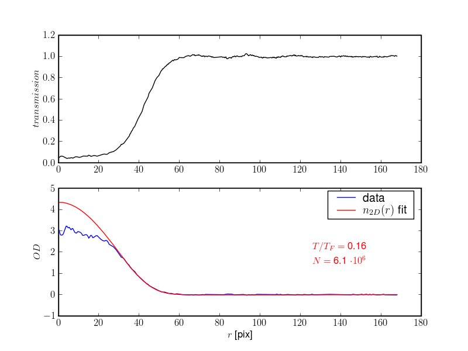

One of the goals of the development of Odysseus is to create an easy to use software package that fits images in a fast, simple and robust way. To achieve this, there is a single module, fitfermions, that contains high-level functions that can be used from user scripts. Most of the heavy lifting is being done by the function fitfermions.fit_img(), which takes the path to a single image file, opens it, radially averages the transmission image, constructs the optical density profile, fits the column density for an ideal Fermi gas to it and finally extracts the number of atoms and temperature from the fit. Several example scripts are provided, they can be easily modified - with for example the names of the image files that are of interest - and run interactively.
Simply copy this script into a new file, modify and run!
1 2 3 4 5 6 7 8 9 10 11 12 13 14 15 16 17 18 19 20 | import os
from odysseus.fitfermions import fit_img, find_ellipticity
from odysseus.imageprocess import *
from odysseus.imageio import *
## import a single image ##
dirname = '../../../archives/2008-09-11/'
#dirname = 'c:\\Data\\2008-05-27'
fname = 'raw9.11.2008 7;35;23 PM.TIF'
img_name = os.path.join(dirname, fname)
rawframes = import_raw_frames(img_name)
transimg, odimg = calc_absorption_image(rawframes)
# set the ROI
transimg = transimg[120:350, 50:275]
# find the ellipticity if the expansion is not spherically symmetric
ellip = find_ellipticity(transimg)
# do the fit
ToverTF, N, ans = fit_img(transimg, elliptic=(ellip, 0))
|
The above script results in the determined temperature and number of atoms being printed in the console, as well as an image containing the radially averaged transmission image, optical density profile and a fit of that OD profile with the expected one for an ideal Fermi gas, as shown below.
A high level interface to the temperature fit routines for fermions.
The easiest to use function is fit_img(). When a single transmission image is passed in to this function, the fit should just work. Normalization is automatically taken care of. It is assumed that the atom cloud is azimuthally symmetric around its center of mass. If this is not the case, find_ellipticity() should be used to find the aspect ratio of the cloud first.
Fits an absorption image with an ideal Fermi gas profile
The image is normalized, then azimuthally averaged, then fitted. If the input is a list of imaged they are separately normalized and then averaged and fitted.
Inputs
- transimg: 2D array or list of 2D arrays, containing the image data
Outputs
- ToverTF: float, the temperature of the Fermi gas in units of T_F
- N: float, the number of atoms of the Fermi gas
Optional inputs
od_max = float, the maximum optical density that is used in the fit
- showfig: boolean, determines if a figure is shown with density profile
and fit
elliptic: tuple, containing two elements. the first one is the ellipticity (or ratio of major and minor axes), the second one is the angle by which the major axis is rotated from the y-axis
pixcal: float, pixel size calibration in m/pix.
fitfunc: string, name of the fit function to be used. Valid choices are idealfermi, gaussian, idealfermi_fixedT
T: float, the temperature for idealfermi_fixedT
full_output: string, if value is odysseus the correct objects for the Odysseus GUI are returned
- norm: bool, if False the normalization of the image is turned off.
This is mainly useful if you fit computer-generated images or images that you already normalized some other way.
Fits an absorption image with an ideal Fermi gas profile
Inputs
rcoord: 1D array containing the radial coordinate
od_prof: 1D array containing the radially averaged OD profile
- od_cutoff: int, the index of rcoord from where the fit has to be
performed.
guess: tuple, initial fit parameters, the three elements are n0, a, bprime
pixcal: float, pixel size calibration in m/pix.
Outputs
- ToverTF: float, the temperature of the Fermi gas in units of T_F
- N: float, the number of atoms of the Fermi gas
- ans: tuple, containing the fit result
Optional inputs
- fitfunc: string, name of the fit function to be used. Valid choices are idealfermi, gaussian, idealfermi_fixedT
- T: float, the temperature for idealfermi_fixedT
To make sure that fits make sense, a lot of tests can be done. There is a straightforward way to run many of these tests at once and generate a test report for an image. This comes in the form of a pdf file generated through LaTeX. In the simple example below an image is loaded, the region of interest (ROI) is set and a report generated.
1 2 3 4 5 6 7 8 9 10 11 12 13 | import os
from odysseus.imageprocess import *
from odysseus.imageio import *
from odysseus import texreport
dirname = '/home/ralf/data/archives/raw_frames/'
tifname = 'raw9.11.2008 7;35;23 PM.TIF'
imgname = os.path.join(dirname, tifname)
rawframes = import_raw_frames(imgname)
transimg, odimg = calc_absorption_image(rawframes)
transimg = transimg[120:350, 50:275] # ROI
texreport.generate_report(rawframes, transimg, imgname)
|
The transmission and raw images are shown, the azimuthally averaged image with the best fit is shown, the fit results (T, N) are given, the residuals are displayed, and the ellipticity is checked.
{kind=link}